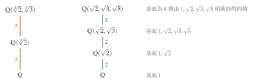

STEP II 2023，第 4 題
繼續之前，請先閱讀題目（原題為英文）。題目載於 OCR 提供下載的 2023 年 STEP 試卷（zip 檔案）內的 STEP II 試卷： www.ocr.org.uk/Images/707102-2023-past-papers.zip
引子
\(\sqrt2\) 是 \(x^2 - 2\) 的根，而這是一個整數係數多項式（polynomial）。同樣，\(\sqrt3\) 是 \(x^2 - 3\) 的根。那麼 \(\sqrt2 + \sqrt3\) 是否也是某個整數係數多項式的根？\(\sqrt2 + \sqrt3 + \sqrt5\) 又如何？\(\sqrt[3]2 + \sqrt[3]3\) 呢？
凡是整數係數多項式的根，都稱為代數數（algebraic number）。這道題透過親手消元（elimination），說明代數數之和仍是代數數。計算所得的次數 \(4\)、\(8\)、\(6\)、\(9\) 並非偶然：它們量度每個數有多「複雜」，而這種量度，即域擴張的次數（degree of a field extension），正是最終解決古希臘倍立方與三等分角問題的關鍵。
動筆之前
要找一個以 \(\sqrt2\) 為根的多項式，你會把 \(x = \sqrt2\) 平方，從而消去平方根。若有兩個不同的平方根，怎樣才能逐一消去？
先把其中一個平方根單獨移到一邊再平方，它便會消失；然後把另一個平方根單獨移到一邊，再平方一次。每次平方都可能令次數加倍。整道題的策略就是如此：逐一消去根式（radical）。
逐步解題
階段 1 兩個平方根
若 \((x - \sqrt2)^2 = 3\)，則 \(x^2 - 2\sqrt2\,x + 2 = 3\)，所以 \(x^2 - 1 = 2\sqrt2\,x\)。平方便可消去餘下的平方根：\((x^2 - 1)^2 = 8x^2\)，即 \[x^4 - 10x^2 + 1 = 0. \qed\] 而 \(x = \sqrt2 + \sqrt3\) 滿足 \((x - \sqrt2)^2 = (\sqrt3)^2 = 3\)，所以 \(\mathrm{f}(\sqrt2 + \sqrt3) = 0\)。■
階段 2 三個平方根
設 \(x = \sqrt2 + \sqrt3 + \sqrt5\)，則 \(x - \sqrt5 = \sqrt2 + \sqrt3\) 是 \(\mathrm{f}\) 的根。把 \(\mathrm{f}(x - \sqrt5) = 0\) 寫成 \(P(x) + \sqrt5\,Q(x) = 0\) 的形式。之後怎樣消去 \(\sqrt5\)？
利用 \((x - \sqrt5)^2 = x^2 + 5 - 2\sqrt5 x\) 和 \((x - \sqrt5)^4 = \bigl(x^2 + 5 - 2\sqrt5x\bigr)^2 = x^4 + 30x^2 + 25 - 4\sqrt5\,x(x^2 + 5)\) 展開： \[\mathrm{f}(x - \sqrt5) = \bigl(x^4 + 30x^2 + 25\bigr) - 4\sqrt5\,x(x^2 + 5) - 10\bigl(x^2 + 5\bigr) + 20\sqrt5\,x + 1.\] 合併同類項，得 \(P(x) = x^4 + 20x^2 - 24\) 和 \(Q(x) = -4x^3 - 20x + 20x = -4x^3\)。所以 \(x^4 + 20x^2 - 24 = 4\sqrt5\,x^3\)。平方得 \[\bigl(x^4 + 20x^2 - 24\bigr)^2 = 80x^6,\] 展開後得 \[\mathrm{g}(x) = x^8 - 40x^6 + 352x^4 - 960x^2 + 576. \qed\] （驗算：\((x^4 + 20x^2 - 24)^2 = x^8 + 40x^6 + 352x^4 - 960x^2 + 576\)，其中用到 \(400 - 48 = 352\)；再減去 \(80x^6\) 便得 \(\mathrm{g}\)。）
階段 3 一個三次方程與一個平方根
若 \(x = a + \sqrt2\)，則 \(x - \sqrt2\) 是 \(t^3 - 3t + 1\) 的根。代入後，把含有 \(\sqrt2\) 的項與不含它的項分開，然後平方。
\((x - \sqrt2)^3 = x^3 - 3\sqrt2\,x^2 + 6x - 2\sqrt2\)，所以 \[(x - \sqrt2)^3 - 3(x - \sqrt2) + 1 = \bigl(x^3 + 3x + 1\bigr) - \sqrt2\bigl(3x^2 - 1\bigr) = 0.\] 因此 \((x^3 + 3x + 1)^2 = 2(3x^2 - 1)^2\)。展開得 \(x^6 + 6x^4 + 2x^3 + 9x^2 + 6x + 1 = 18x^4 - 12x^2 + 2\)，所以 \[\mathrm{h}(x) = x^6 - 12x^4 + 2x^3 + 21x^2 + 6x - 1. \qed\] 同樣的論證對 \(b + \sqrt2\) 和 \(c + \sqrt2\) 也成立，因為我們只用到 \(a\) 是 \(t^3 - 3t + 1\) 的根這一事實。（\(\mathrm{h}\) 的另外三個根是 \(a - \sqrt2\)、\(b - \sqrt2\) 和 \(c - \sqrt2\)，它們是在平方時引入的。）
階段 4 兩個立方根
設 \(x = \sqrt[3]2 + \sqrt[3]3\)。把兩邊立方。你能否把結果用 \(x\) 和單獨一個立方根表示？
利用 \((u + v)^3 = u^3 + v^3 + 3uv(u + v)\)，取 \(u = \sqrt[3]2\)，\(v = \sqrt[3]3\)： \[x^3 = 2 + 3 + 3\sqrt[3]6\,x, \qquad\text{所以}\qquad x^3 - 5 = 3\sqrt[3]6\,x.\] 再立方一次，便消去最後一個立方根：\((x^3 - 5)^3 = 27 \cdot 6\,x^3 = 162x^3\)。展開 \((x^3 - 5)^3 = x^9 - 15x^6 + 75x^3 - 125\)，得 \[\mathrm{k}(x) = x^9 - 15x^6 - 87x^3 - 125. \qed\]
回顧
逐一消去根式。把一個根式單獨移到一邊，取適當的次方，然後重複這個步驟。
把有理部分與無理部分分開。把式子寫成 \(P + \sqrt5\,Q\)，再利用 \(P^2 = 5Q^2\)，是關鍵的一步。
平方會帶來額外的根。每次平方都會引入「共軛」（conjugate）根，例如除了 \(a + \sqrt2\) 之外還有 \(a - \sqrt2\)。最後得到的多項式以它們全部為根。
背後的數學
所有形如 \(p + q\sqrt2\)（其中 \(p\)、\(q\) 為有理數）的數所組成的集合 \(\mathbb{Q}(\sqrt2)\)，對加、減、乘、除（除數不為零）都封閉：它是一個域（field）。它是 \(\mathbb{Q}\) 上的二維「向量空間」（vector space），以 \(1, \sqrt2\) 為基底（basis），所以我們說它在 \(\mathbb{Q}\) 上的次數（degree）是 \(2\)。添加 \(\sqrt3\) 便得到 \(\mathbb{Q}(\sqrt2, \sqrt3)\)，其基底為 \(1, \sqrt2, \sqrt3, \sqrt6\)，次數為 \(4\)；再添加 \(\sqrt5\)，次數便是 \(8\)（圖 6.3.1）。塔定律（tower law）指出，沿着一座域塔往上，次數會相乘。由一個數生成的域，其次數等於該數的最小多項式（minimal polynomial）的次數，即該數所滿足的有理係數多項式之中次數最低的一個。可以證明，本題的多項式 \(\mathrm{f}\) 和 \(\mathrm{g}\) 都是最小多項式，所以 \(\sqrt2 + \sqrt3\) 的次數是 \(4\)，而 \(\sqrt2 + \sqrt3 + \sqrt5\) 的次數是 \(8\)：事實上，單憑 \(\sqrt2 + \sqrt3 + \sqrt5\) 這一個數，就足以生成整個 \(8\) 次域。

倍立方
尺規作圖（ruler-and-compass construction）所能作出的長度，只限於由有理數出發、反覆解一次和二次方程而得到的數。每一步都給出一個次數為 \(1\) 或 \(2\) 的域擴張，所以根據塔定律，每個可作圖（constructible）的長度都位於一個次數為 \(2\) 的冪的域之內，而它本身的次數也是 \(2\) 的冪。但 \(\sqrt[3]2\) 的最小多項式是 \(x^3 - 2\)，次數為 \(3\)。由於 \(3\) 不是 \(2\) 的冪，\(\sqrt[3]2\) 不可作圖，因此約於公元前 430 年提出的提洛島（Delos）問題，即用尺規把立方體的體積加倍，是不可能做到的。旺策爾（Pierre Wantzel）在 1837 年證明了這一點，同時證明了一般的角不可能三等分，並完成了可作圖正多邊形的分類（第 6.2 節）。兩千年來的種種嘗試，就此被一個關於次數的論證畫上句號。
代數數構成一個域
本題的方法透過例子說明，代數數之和仍是代數數。一般情況則要用線性代數（linear algebra）來證明：若 \(\alpha\) 和 \(\beta\) 的次數分別為 \(m\) 和 \(n\)，則所有 \(\alpha^i\beta^j\)（其中 \(i < m\)，\(j < n\)）這些數所張成的空間，維數至多為 \(mn\)，於是 \(mn + 1\) 個冪 \(1, \alpha + \beta, (\alpha + \beta)^2, \ldots\) 必定線性相關（linearly dependent），由此得出一個次數至多為 \(mn\) 的多項式。我們得到的次數 \(4 = 2 \times 2\)、\(6 = 3 \times 2\) 和 \(9 = 3 \times 3\) 與這個規律完全吻合。不是代數數的數稱為超越數（transcendental number）；\(e\) 和 \(\pi\) 都是例子（分別由埃爾米特（Hermite）於 1873 年及林德曼（Lindemann）於 1882 年證明），而林德曼關於 \(\pi\) 是超越數的定理，也證明了化圓為方同樣不可能。
思維技巧
要找出一個含根式的式子所滿足的多項式，可把根式逐個單獨移到一邊，再取適當的次方，逐一消去。
然後問一問：次數說明了甚麼？最小多項式的次數是該數的一個不變量（invariant），而比較次數是證明某事不可能的最有力方法之一。
延伸練習
本原元（primitive element）。設 \(y = \sqrt2 + \sqrt3\)。證明 \(y^3 = 11\sqrt2 + 9\sqrt3\)，並由此推出 \(\sqrt2 = \frac12(y^3 - 9y)\)。因此每個形如 \(p + q\sqrt2 + r\sqrt3 + s\sqrt6\) 的數都可以寫成 \(y\) 的多項式。
混合根式。求一個次數為 \(6\) 的整數係數多項式，使它以 \(\sqrt2 + \sqrt[3]3\) 為根。
不可約性（irreducibility）。證明 \(x^4 - 10x^2 + 1\) 沒有有理根，而且不能寫成兩個整數係數二次式的積。（提示：試用 \((x^2 + ax + b)(x^2 - ax + c)\)。）由此推出 \(\sqrt2 + \sqrt3\) 的次數是 \(4\)。
三等分角。證明 \(\cos 3\theta = 4\cos^3\theta - 3\cos\theta\)，並由此推出 \(\cos 20^\circ\) 是 \(8x^3 - 6x - 1 = 0\) 的根。假設這個三次方程沒有有理根（請自行驗證），解釋為何不能用尺規把 \(60^\circ\) 的角三等分。
延伸閱讀
Ian Stewart, Galois Theory（CRC Press）。講述域擴張、塔定律及古典作圖問題，為大學本科生而寫。
Richard Courant & Herbert Robbins, What Is Mathematics?（Oxford University Press）。第 3 章證明古希臘幾大問題不可能解決，毋須任何預備知識。
Robin Hartshorne, Geometry: Euclid and Beyond（Springer）。以近世代數處理尺規作圖。